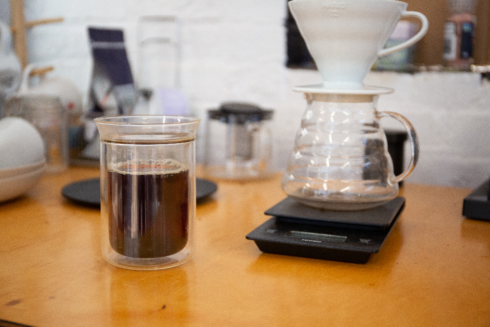
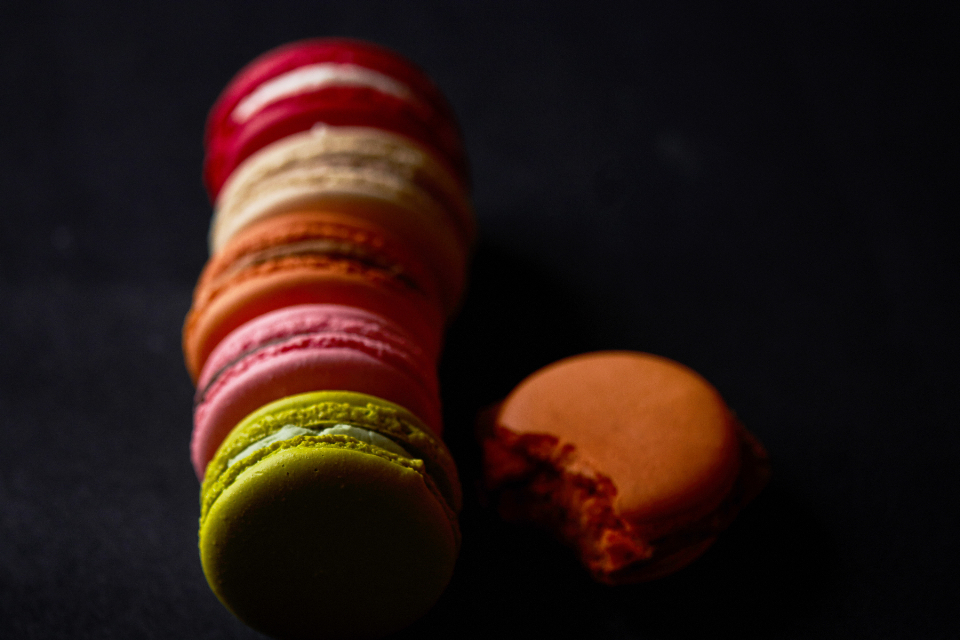
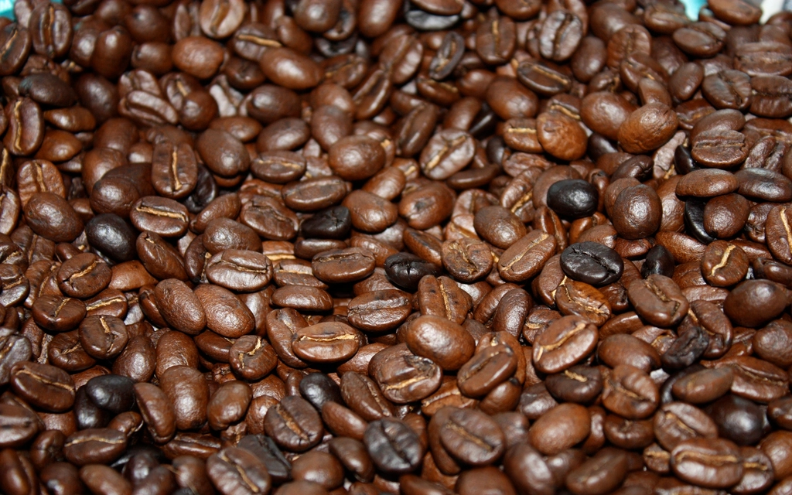

GARCON'S WELCOME
Café de Garçon
国分町の喧騒を抜け、2階にだけ灯る、小さな時間。
宮城県随一の繁華街・国分町。見上げなければ気づかないビルの2階に、カフェ・ド・ギャルソンはひっそりと灯りをともしています。階段をひとつ上がるだけで、通りの賑わいから静かな一杯の時間へ。
ギャルソン、という名の理由。
「ガルソン(garçon)」は、フランスのビストロやカフェで、お客さまをもてなす給仕人を指す言葉だといわれています。黒いベストに白いシャツ、きちんと結ばれた蝶ネクタイ――そんな、きびきびとして気品のある佇まいを思い浮かべる方も多いのではないでしょうか。当サイトでは、この言葉の響きを、お客さまを丁寧にお迎えする一杯の時間というコンセプトとして受け止めています。
ギャルソンのことをもっと読む一杯に、丁寧を。
ハンドドリップで丁寧に抽出したコーヒーや、フレンチ仕立ての焼き菓子。カップに注がれる一杯一杯に、落ち着いた時間が流れます。



見上げないと気づかない、2階の灯り。
国分町の繁華街の中にありながら、ビルを2階へ上がった先に静かな時間が待っています。1階の喧騒を通り過ぎ、階段をひとつ上がる。そのわずかな距離が、賑やかな通りから静かな時間への切り替わりになります。
アクセスを見るお客様の声
イメージ例
国分町で働く会社員の方のイメージ(一人利用)
仕事帰り、国分町の通りを歩いているとき、ふと見上げた2階の窓が気になって、思い切って階段を上がってみました。ドアを開けた瞬間、さっきまでの賑やかな通りの音がすっと遠くなって、驚くほど静かな空間が広がっていました。カウンターでいただいた一杯は、ゆっくり味わいたくなる落ち着いた時間で、一人でも気負わず過ごせました。